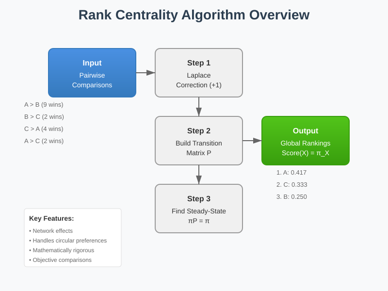
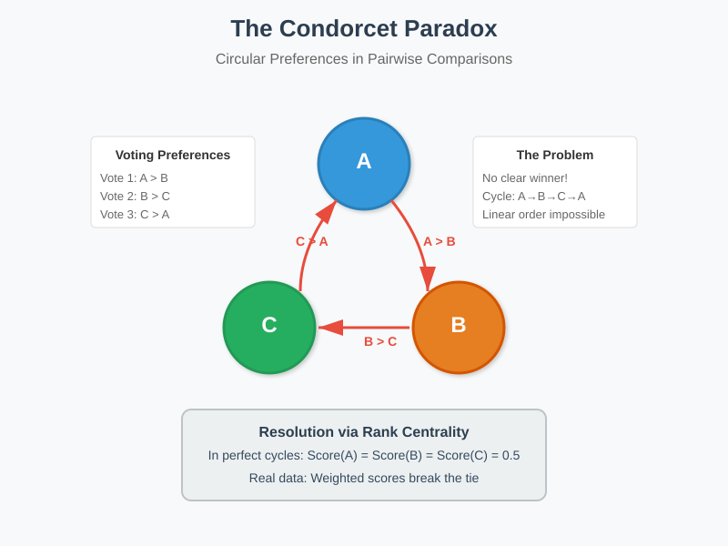
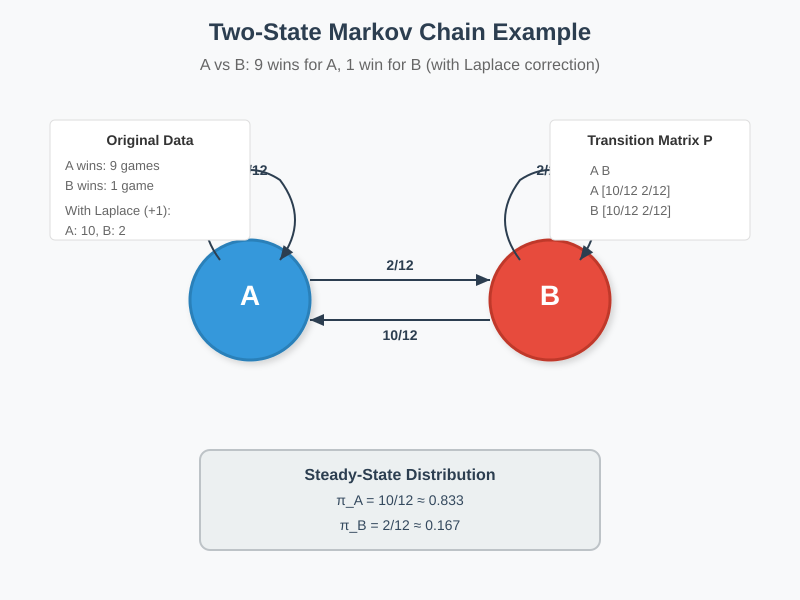
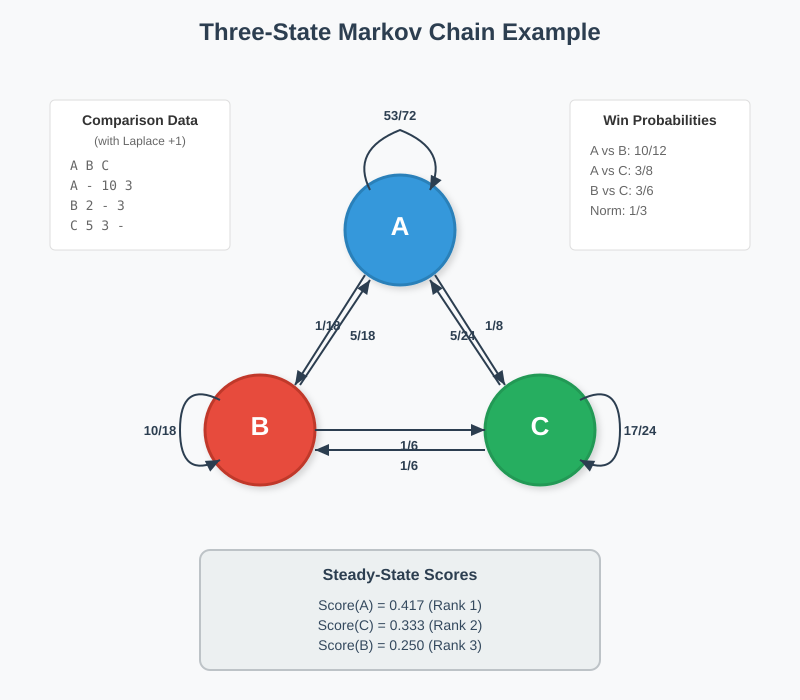
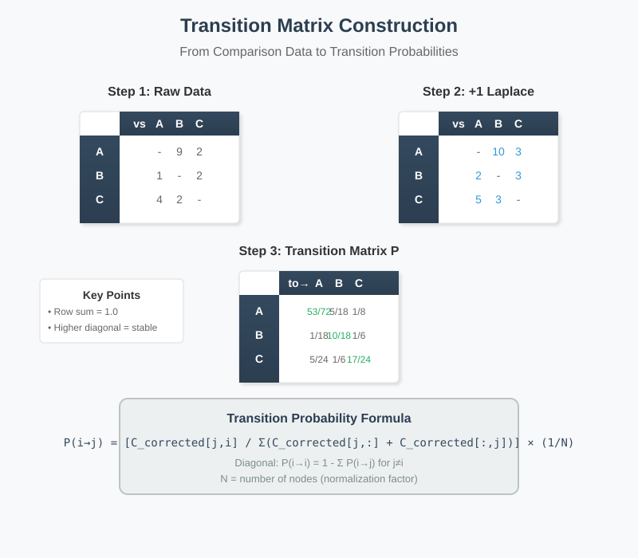

Rank Centrality: Population Comparison Ranking Algorithm
📋 Quick Navigation
- Overview
- Mathematical Foundations
- The Condorcet Paradox
- Laplace Correction
- Markov Chain Formulation
- Algorithm Implementation
- Python Implementation
- Applications and Use Cases
- References & Further Reading
Overview
Rank Centrality is a sophisticated algorithm for ranking entities based on pairwise comparisons rather than absolute ratings. Unlike traditional rating systems, it addresses the fundamental subjectivity problem by focusing on relative preferences, making it particularly valuable for sports rankings, recommendation systems, and social choice theory.

Key Advantages:
- Objectivity: Comparisons are more absolute than subjective ratings
- Robustness: Handles incomplete data and circular preferences elegantly
- Network Effects: Winners against strong opponents receive higher scores
- Mathematical Rigor: Based on Markov chain steady-state distributions
Core Principle:
The algorithm treats rankings as a random walk on a graph where nodes represent options (teams, restaurants, products) and edges represent comparison outcomes. The steady-state distribution of this walk determines the final scores.
Mathematical Foundations
Problem Formulation
Given a set of options {A, B, C, ...} and pairwise comparison data, we seek to assign scores s(X) to each option such that the scores reflect the global ranking.
Input Data Structure:
Comparison Matrix C where:
C[i,j] = number of times option i defeated option j
Score Definition
The score of an option is defined as the fraction of time spent at that node in the long-term behavior of a specially designed Markov chain.
Basic Scoring Rule:
Score(A) = (Wins(A) + 1) / (Total_Games(A) + 2)
Where the +1 correction is the Laplace smoothing factor to handle edge cases.
Weighted Score Calculation
For meaningful rankings, we need weighted scores that account for opponent strength:
Score(B) = (1/N) × Σ [P(i→B) × Score(i)]
Where: - N = normalization factor (number of nodes) - P(i→B) = probability of transitioning from node i to B - Score(i) = score of node i
The Condorcet Paradox
The Condorcet Paradox, identified by Marquis de Condorcet in the 1700s, reveals the fundamental challenge in creating global rankings from pairwise comparisons.

The Paradox Explained
Consider three options with the following preferences:
- Vote 1: A > B (A preferred over B)
- Vote 2: B > C (B preferred over C)
- Vote 3: C > A (C preferred over A)
This creates a cycle: A > B > C > A, making linear ordering impossible.
Resolution Through Scoring
Rank Centrality resolves this paradox by:
- Equal Scores: In perfectly cyclic cases, all options receive equal scores
- Weighted Averaging: Real-world data rarely exhibits perfect cycles
- Probabilistic Interpretation: Treats preferences as transition probabilities
Mathematical Resolution:
In the paradox case, each option wins 50% of its comparisons, resulting in equal scores of 0.5 after Laplace correction.
Laplace Correction
Pierre-Simon Laplace's correction addresses the problem of extreme outcomes and small sample sizes.
The Sunrise Problem
Laplace asked: "What is the probability the sun will rise tomorrow?"
Given the sun has risen for ~1.6 trillion days:
P(sunrise) = (1.6 trillion + 1) / (1.6 trillion + 2)
This avoids the problematic conclusion that P(sunrise) = 1.0
Application to Rankings
Without Correction (Problematic):
If A wins all 10 games against B: - Score(A) = 10/10 = 1.0 - Score(B) = 0/10 = 0.0
This implies B has zero chance of ever winning.
With Laplace Correction:
Score(A) = (10 + 1) / (10 + 2) = 11/12 ≈ 0.917
Score(B) = (0 + 1) / (10 + 2) = 1/12 ≈ 0.083
This maintains that A is strongly favored while acknowledging B's potential.
Markov Chain Formulation
The algorithm's elegance comes from modeling the ranking problem as a Markov chain where the steady-state distribution provides the scores.
Two-State Example

For options A and B with corrected wins: - A wins: 10 (9 actual + 1 Laplace) - B wins: 2 (1 actual + 1 Laplace)
Transition Probabilities:
P(A → A) = 10/12
P(A → B) = 2/12
P(B → A) = 10/12
P(B → B) = 2/12
Steady-State Equation:
π_A = (10/12) × π_A + (10/12) × π_B
π_A + π_B = 1
Solving yields: π_A = 10/12, π_B = 2/12
Three-State Example

For three options with comparison matrix:
A B C
A - 9 2
B 1 - 2
C 4 2 -
After Laplace correction (+1 to each cell):
A B C
A - 10 3
B 2 - 3
C 5 3 -
Transition Calculation:
From state B: - To A: (10/12) × (1/3) = 5/18 - To C: (3/6) × (1/3) = 1/6 - Stay at B: 1 - 5/18 - 1/6 = 10/18
Algorithm Implementation
Core Algorithm Steps
1. Data Collection: Gather pairwise comparison results into matrix C
2. Apply Laplace Correction:
C_corrected[i,j] = C[i,j] + 1
3. Calculate Transition Matrix:
P[i,j] = (C_corrected[j,i] / sum(C_corrected[j,i] + C_corrected[i,j])) × (1/N)
P[i,i] = 1 - sum(P[i,k] for k ≠ i)
4. Find Steady-State Distribution: Solve πP = π subject to Σπ_i = 1
5. Extract Scores: The steady-state probabilities π are the final scores
Transition Matrix Visualization

Computational Complexity
- Time Complexity: O(n³) for matrix operations
- Space Complexity: O(n²) for storing comparison matrix
- Convergence: Typically 10-100 iterations for power method
Python Implementation
Complete Implementation with NumPy
import numpy as np
from typing import Dict, List, Tuple
class RankCentrality:
"""
Rank Centrality algorithm for ranking based on pairwise comparisons.
"""
def __init__(self, laplace_correction: float = 1.0):
"""
Initialize Rank Centrality ranker.
Args:
laplace_correction: Smoothing parameter (default: 1.0)
"""
self.laplace_correction = laplace_correction
self.nodes = []
self.comparison_matrix = None
self.transition_matrix = None
self.scores = None
def fit(self, comparisons: List[Tuple[str, str, int]]):
"""
Fit the model with comparison data.
Args:
comparisons: List of (winner, loser, count) tuples
"""
# Extract unique nodes
self.nodes = list(set(
[c[0] for c in comparisons] + [c[1] for c in comparisons]
))
n = len(self.nodes)
node_idx = {node: i for i, node in enumerate(self.nodes)}
# Build comparison matrix
self.comparison_matrix = np.zeros((n, n))
for winner, loser, count in comparisons:
i, j = node_idx[winner], node_idx[loser]
self.comparison_matrix[i, j] += count
# Apply Laplace correction
corrected = self.comparison_matrix + self.laplace_correction
# Calculate transition matrix
self.transition_matrix = np.zeros((n, n))
for i in range(n):
for j in range(n):
if i != j:
total_games = corrected[i, j] + corrected[j, i]
self.transition_matrix[j, i] = (
corrected[i, j] / total_games * (1.0 / n)
)
# Diagonal elements
self.transition_matrix[i, i] = 1.0 - np.sum(
self.transition_matrix[:, i]
) + self.transition_matrix[i, i]
# Find steady-state distribution
self.scores = self._power_iteration()
return self
def _power_iteration(self, max_iter: int = 1000, tol: float = 1e-8):
"""
Find steady-state distribution using power iteration.
"""
n = len(self.nodes)
x = np.ones(n) / n # Initial uniform distribution
for _ in range(max_iter):
x_new = self.transition_matrix @ x
if np.linalg.norm(x_new - x) < tol:
break
x = x_new
return x / np.sum(x) # Normalize
def get_rankings(self) -> Dict[str, float]:
"""
Get final rankings as a dictionary.
Returns:
Dictionary mapping nodes to scores
"""
if self.scores is None:
raise ValueError("Model not fitted. Call fit() first.")
return {
node: score
for node, score in zip(self.nodes, self.scores)
}
def rank(self) -> List[Tuple[str, float]]:
"""
Get ranked list of (node, score) tuples.
Returns:
List of tuples sorted by score (descending)
"""
rankings = self.get_rankings()
return sorted(
rankings.items(),
key=lambda x: x[1],
reverse=True
)
# Example usage
if __name__ == "__main__":
# Sports team example
comparisons = [
("Team_A", "Team_B", 9), # A beat B 9 times
("Team_B", "Team_A", 1), # B beat A 1 time
("Team_B", "Team_C", 2), # B beat C 2 times
("Team_C", "Team_B", 2), # C beat B 2 times
("Team_A", "Team_C", 2), # A beat C 2 times
("Team_C", "Team_A", 4), # C beat A 4 times
]
ranker = RankCentrality()
ranker.fit(comparisons)
print("Rankings:")
for rank, (team, score) in enumerate(ranker.rank(), 1):
print(f"{rank}. {team}: {score:.4f}")
Visualization Helper
import matplotlib.pyplot as plt
import networkx as nx
def visualize_comparison_network(comparisons, scores=None):
"""
Visualize the comparison network with optional scores.
"""
G = nx.DiGraph()
# Add edges with weights
for winner, loser, count in comparisons:
if G.has_edge(winner, loser):
G[winner][loser]['weight'] += count
else:
G.add_edge(winner, loser, weight=count)
# Layout
pos = nx.spring_layout(G, seed=42)
# Node colors based on scores
if scores:
node_colors = [scores.get(node, 0) for node in G.nodes()]
else:
node_colors = 'lightblue'
# Draw
plt.figure(figsize=(12, 8))
nx.draw_networkx_nodes(
G, pos,
node_color=node_colors,
node_size=2000,
cmap='RdYlGn',
vmin=0, vmax=1
)
nx.draw_networkx_labels(G, pos)
nx.draw_networkx_edges(
G, pos,
edge_color='gray',
arrows=True,
arrowsize=20,
width=2
)
# Edge labels
edge_labels = nx.get_edge_attributes(G, 'weight')
nx.draw_networkx_edge_labels(G, pos, edge_labels)
plt.title("Comparison Network")
plt.axis('off')
plt.tight_layout()
plt.show()
Applications and Use Cases
1. Sports Rankings
Professional Leagues: - NFL/NBA: Account for strength of schedule - Tennis: ELO-like systems with network effects - Chess: Tournament rankings beyond simple wins/losses
Advantages: - Beating top-ranked opponents counts more - Handles incomplete round-robin tournaments - Resolves circular win patterns fairly
2. Recommendation Systems
Restaurant Rankings: - Convert star ratings to pairwise preferences - User A rating Restaurant X higher than Y creates comparison - Aggregate across all users for global ranking
Product Recommendations: - A/B testing results as comparisons - Click-through rates as implicit preferences - Purchase decisions as strong preferences
3. Social Choice Theory
Voting Systems: - Ranked-choice voting conversion - Preference aggregation in committees - Multi-criteria decision making
Academic Applications: - Paper citation networks - Grant proposal evaluation - Peer review aggregation
4. Information Retrieval
Search Result Ranking: - Click-through patterns as preferences - Dwell time comparisons - Relevance feedback incorporation
Benefits Over Traditional Methods: - Handles subjective rating bias - Network effects capture quality signals - Robust to manipulation attempts
Implementation Considerations
Data Requirements: - Minimum ~10 comparisons per entity - Better with balanced comparison coverage - Can handle sparse networks with Laplace correction
Computational Considerations: - Scales to millions of nodes with sparse matrices - Distributed computation possible - Incremental updates feasible
Parameter Tuning: - Laplace correction: typically 1.0 - Normalization factor: 1/N standard - Convergence threshold: 1e-8 recommended
References & Further Reading
Academic Papers
-
Condorcet, M. (1785). Essai sur l'application de l'analyse à la probabilité des décisions rendues à la pluralité des voix. Foundation of social choice theory and voting paradoxes.
-
Page, L., Brin, S., et al. (1999). The PageRank Citation Ranking: Bringing Order to the Web. Similar Markov chain approach for web page ranking.
-
Laplace, P.S. (1814). Essai philosophique sur les probabilités. Classical treatment of the sunrise problem and smoothing.
-
Negahban, S., et al. (2017). Rank Centrality: Ranking from Pairwise Comparisons. ArXiv:1209.1688 - Modern statistical analysis of the algorithm.
Online Resources
- Stanford CS224W: Graph Machine Learning Course - Comprehensive coverage of graph algorithms
- NetworkX Documentation: Centrality Measures
- SciPy Tutorial: Markov Chains and Steady States
Related Algorithms
- PageRank: Web page importance via link analysis
- ELO Rating: Chess and competitive gaming rankings
- Bradley-Terry Model: Probabilistic pairwise comparison model
- Kemeny-Young Method: Optimal rank aggregation
🚀 Google Colab Notebooks
 Interactive Rank Centrality Tutorial
Interactive Rank Centrality Tutorial